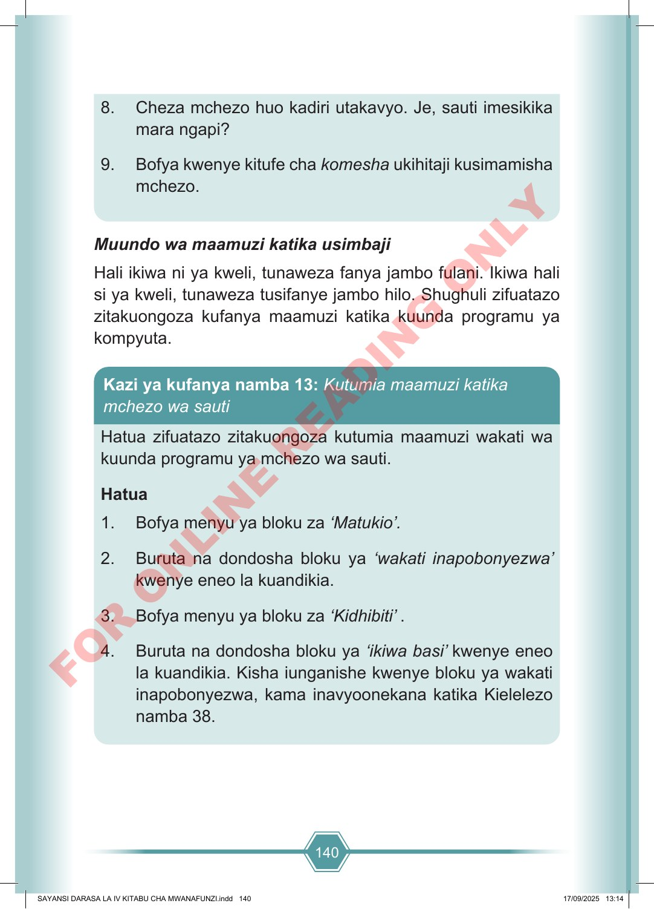

140 8. Cheza mchezo huo kadiri utakavyo. Je, sauti imesikika mara ngapi? 9. Bofya kwenye kitufe cha komesha ukihitaji kusimamisha mchezo. Muundo wa maamuzi katika usimbaji Hali ikiwa ni ya kweli, tunaweza fanya jambo fulani. Ikiwa hali si ya kweli, tunaweza tusifanye jambo hilo. Shughuli zifuatazo zitakuongoza kufanya maamuzi katika kuunda programu ya kompyuta. Hatua zifuatazo zitakuongoza kutumia maamuzi wakati wa kuunda programu ya mchezo wa sauti. Hatua 1. Bofya menyu ya bloku za ‘Matukio’. 2. Buruta na dondosha bloku ya ‘wakati inapobonyezwa’ kwenye eneo la kuandikia. 3. Bofya menyu ya bloku za ‘Kidhibiti’ . 4. Buruta na dondosha bloku ya ‘ikiwa basi’ kwenye eneo la kuandikia. Kisha iunganishe kwenye bloku ya wakati inapobonyezwa, kama inavyoonekana katika Kielelezo namba 38. Kazi ya kufanya namba 13: Kutumia maamuzi katika mchezo wa sauti SAYANSI DARASA LA IV KITABU CHA MWANAFUNZI.indd 140 SAYANSI DARASA LA IV KITABU CHA MWANAFUNZI.indd 140 17/09/2025 13:14 17/09/2025 13:14 F O R O N L I N E R E A D I N G O N L Y